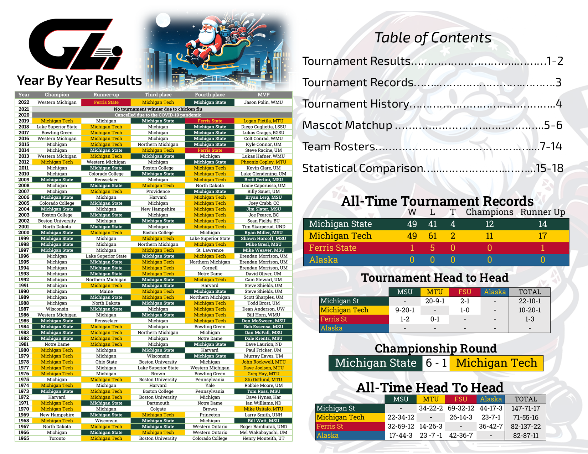
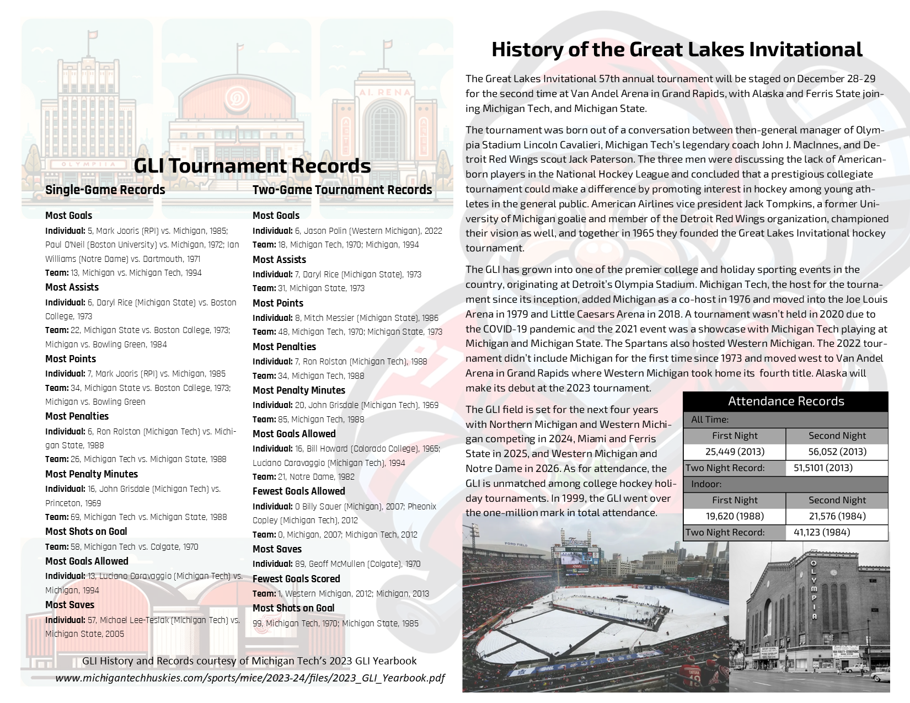
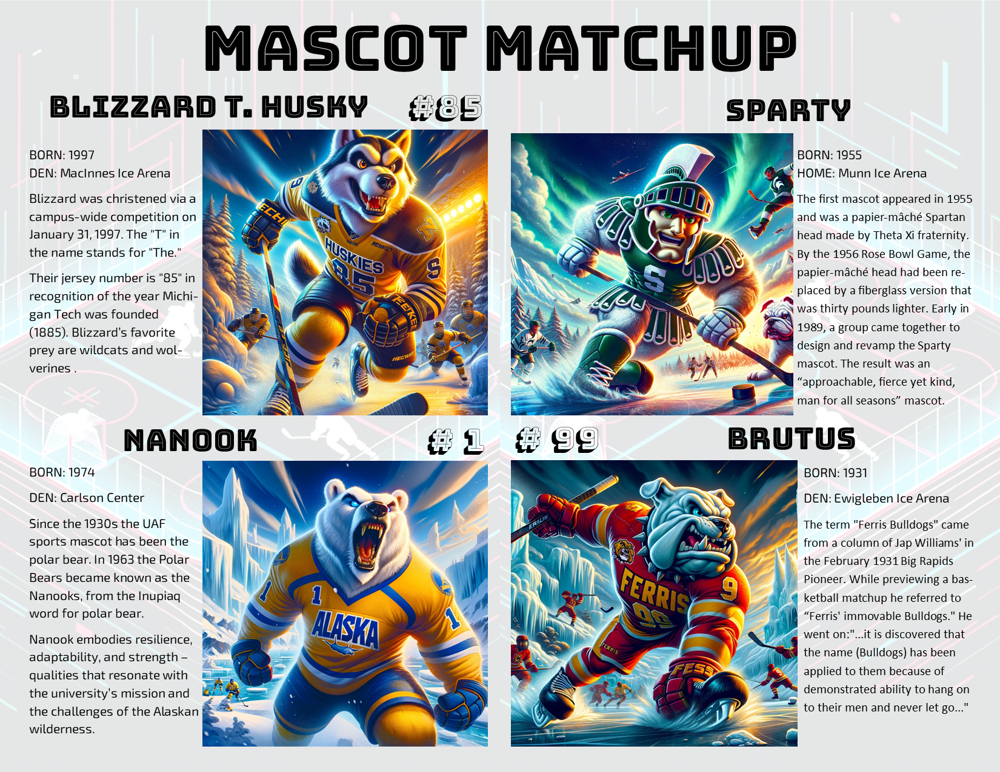
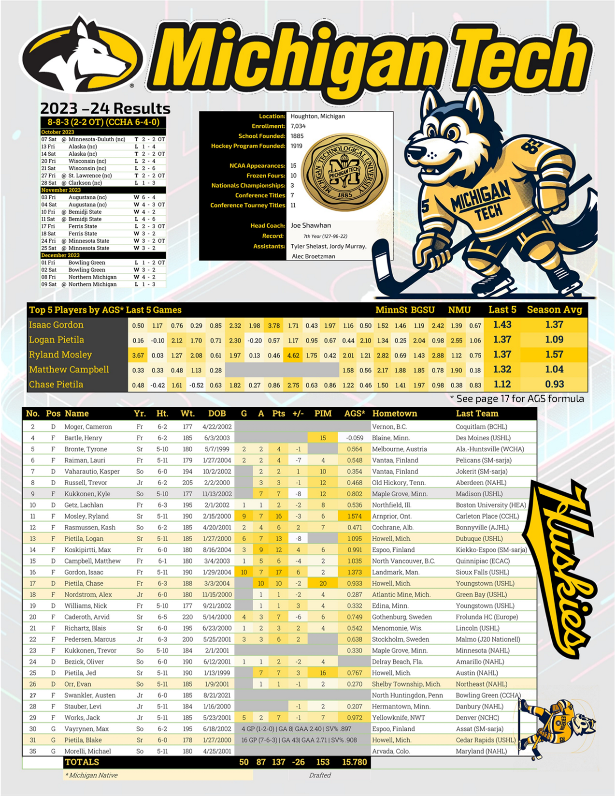
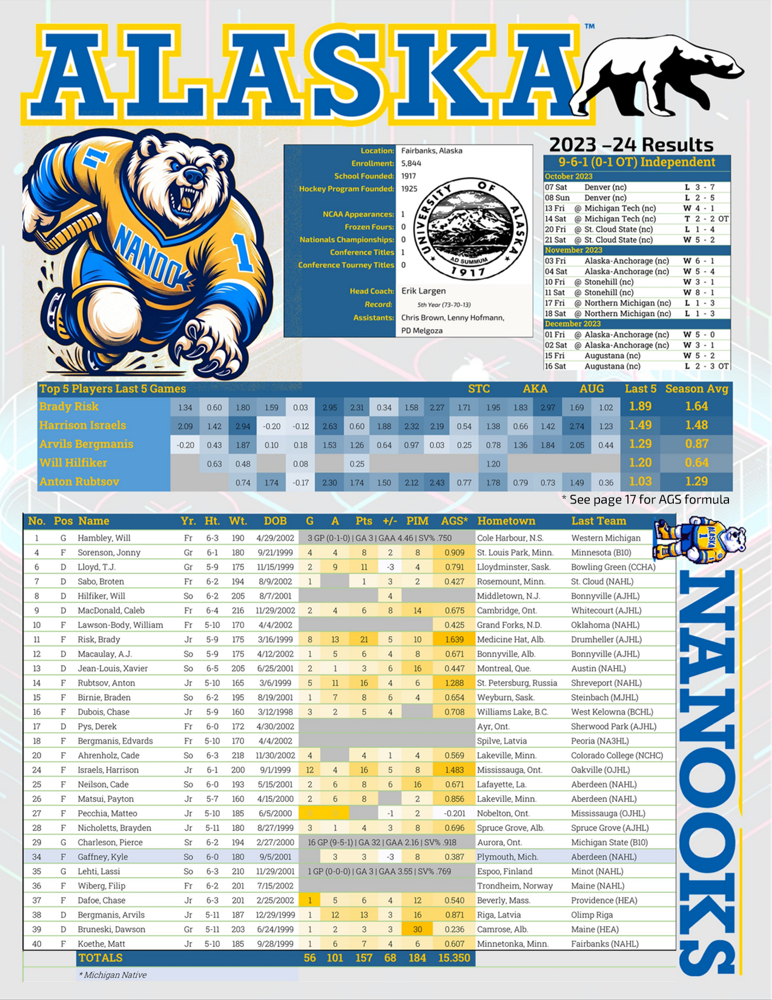
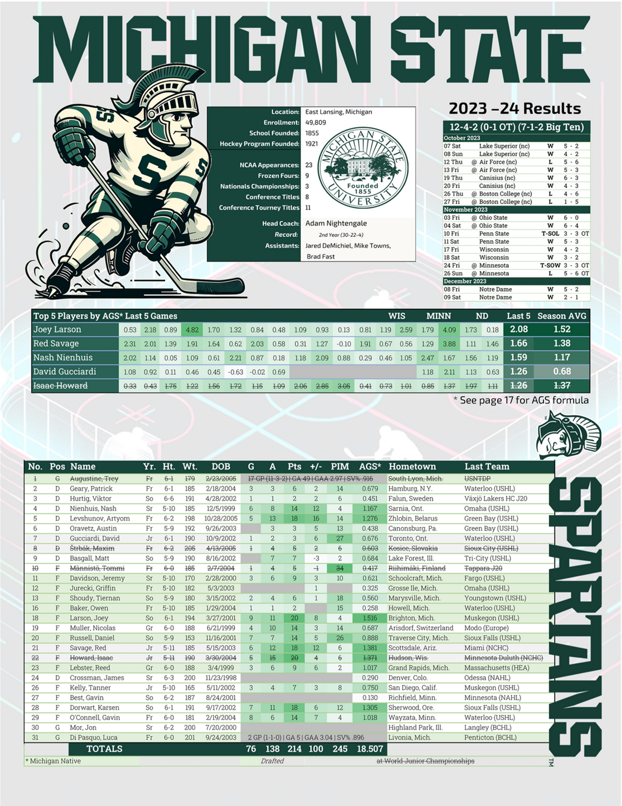
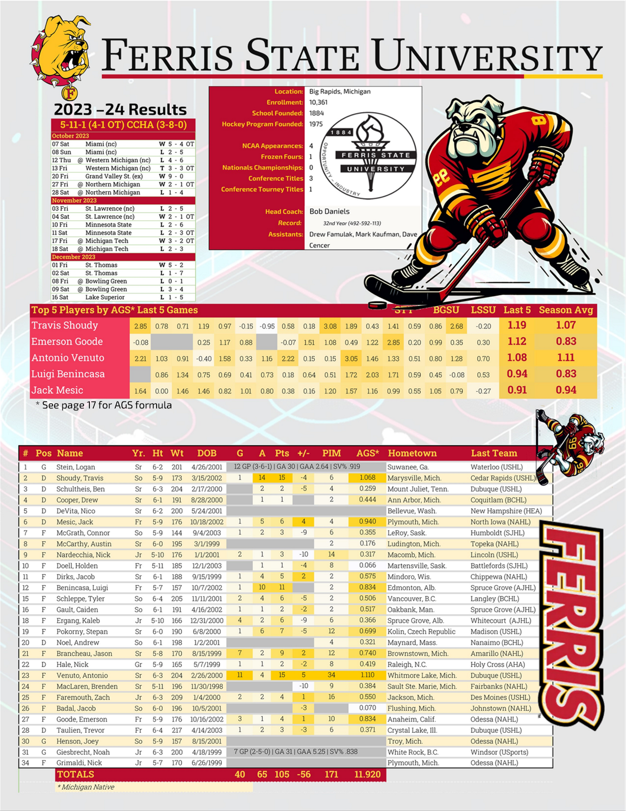
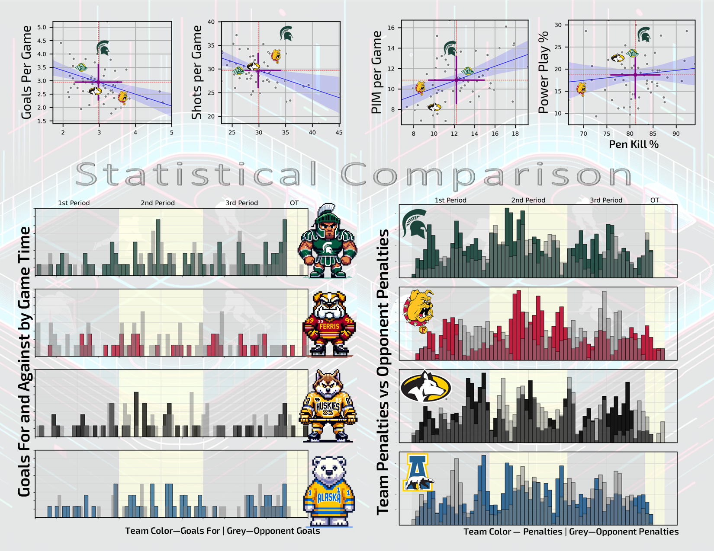
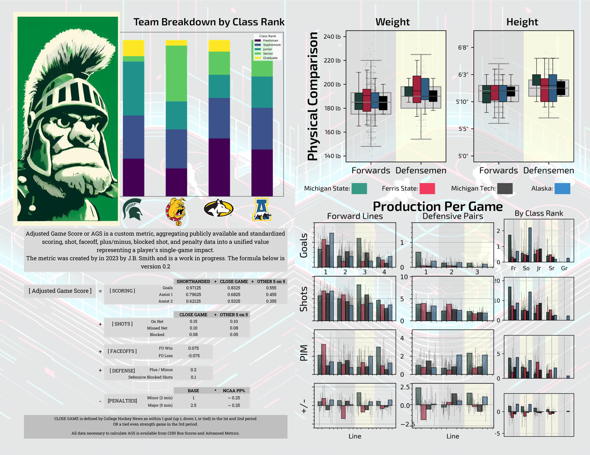
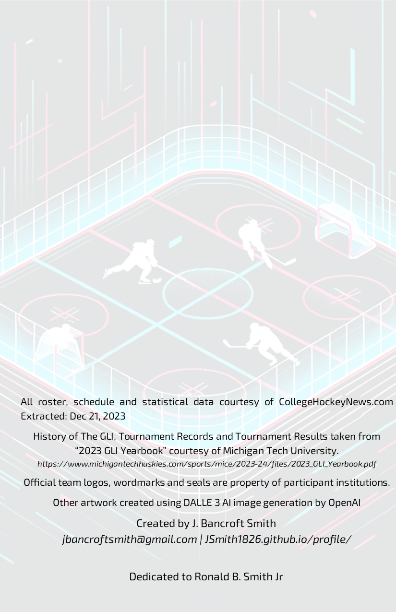

Editorial project · 2023
An unofficial tournament program with room for personality.
I assembled a Great Lakes Invitational booklet using team history, rosters, statistics, charts, and visual storytelling. It was a personal project, not an official tournament publication.
Why make it?
I enjoy hockey data, but a table or notebook is not always the best way to share it. The program gave me a chance to choose what a fan might actually want to see before and during the games, then arrange that information as a browsable print piece.
What’s inside
Team pages, roster and schedule information, Great Lakes Invitational history, player comparisons, and charts. I combined data preparation with layout and visual design. The pages below are images from the finished booklet.











Unofficial fan project. Team names, logos, and tournament marks belong to their respective owners.